An educator of eight years, now designing AI-integrated learning with human-centred design at its heart.
After eight years of teaching, from university writing support to classrooms in Hanoi and online lessons with young learners, I’ve moved into instructional design. I believe creativity and empathy lie at the heart of good learning design. I want to use AI-integrated learning to its full potential, while keeping what makes learning human at the centre, including the learner’s own thinking, voice and connection to others.
Selected work
Four projects that show how I design for different people and contexts.
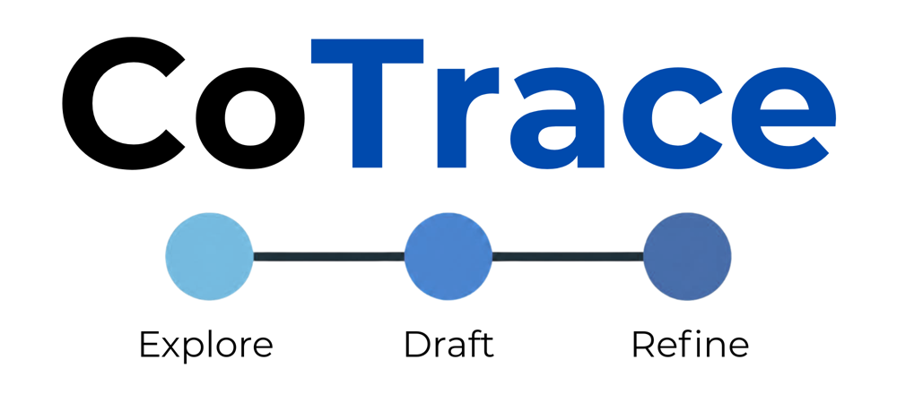
CoTrace
A concept for AI-integrated learning that keeps students doing the thinking, and makes that thinking visible.
Read case study →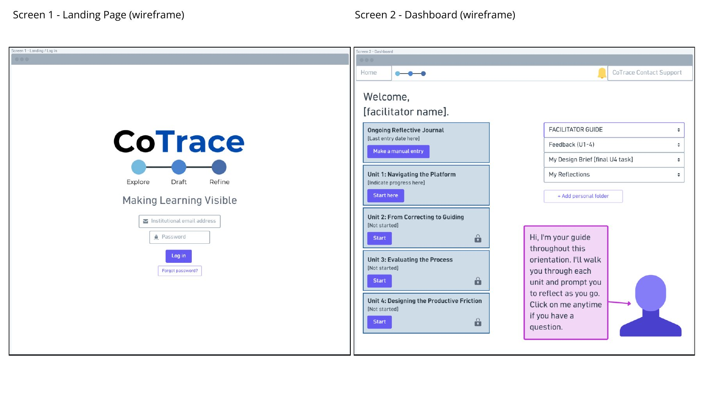
Facilitator Orientation Module
A four-unit online module, guided by an AI agent, that prepares tertiary facilitators to teach with CoTrace.
Read case study →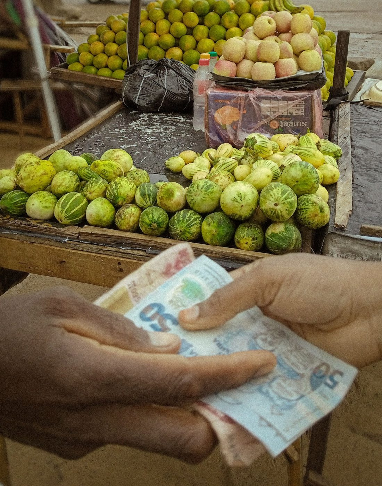
Stock photoAdult literacy curriculum
A conceptual functional literacy and English programme for rural women in Zambia, built around andragogy, Ubuntu and translanguaging.
Read case study →Daily Card, a co-designed job aid
A low-fidelity desk card co-designed with a new admin assistant who was learning her role with no formal onboarding.
Read case study →See how I think as a designer
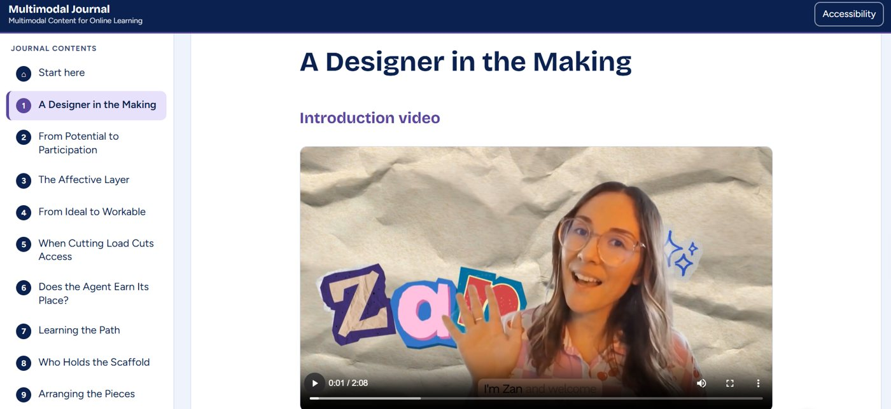
My multimodal journal is where I work through my design thinking in the open, through writing, video and visuals. It traces the questions, tensions and decisions behind projects like CoTrace, and how my practice has grown across my diploma.
I designed it as an LMS-style website and taught myself to build it with AI assistance.
Final ReflectionWhere I bring together the key ideas from the journal, what I’ve learned, and where I want to go next as a designer.My journey into learning design
Eight years in education, from university writing support to classrooms in Hanoi and online, taught me how learners actually respond to a lesson. That’s still the first thing I design for.
Let’s design something people will actually use.
Open to entry-level instructional design and learning design roles, remote or in Cape Town.
CoTrace, keeping students’ thinking visible when they learn with AI
A concept for an AI-integrated learning platform that keeps students doing the thinking, and makes that thinking visible enough to learn from and assess.
AI-integrated learning in higher education
Undergraduate students and their educators
Generativism, affordances and constraints, productive struggle
Concept, wireframes, prototype and pilot plan
Students are using AI without structure, and their thinking is disappearing from view.
- With no guidance, students reach for AI’s easiest use, generating text, instead of using it to think.
- The reasoning behind a piece of work becomes invisible to the student and the educator.
- Passive consumption replaces the productive struggle where real learning happens.
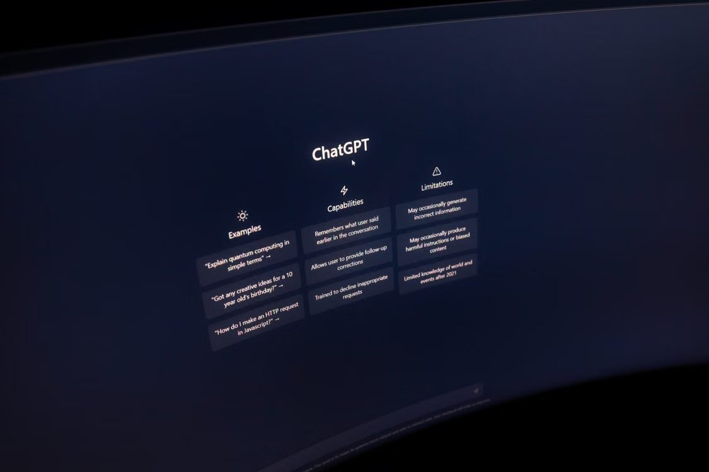
Stock photoDesign the conditions, not just the tool
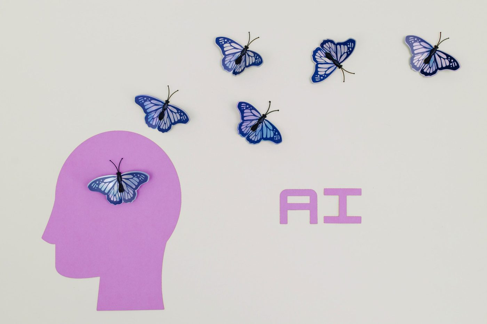
Stock photoAI can already do a lot. My question was different. What would it take for students to meet AI in a way that sharpens their thinking instead of replacing it?
CoTrace is my answer in concept form. It shapes how students work with AI, so the learning uses are easy to reach and the shortcuts are harder to take.
The theory behind the design
- Real learning with AI is active, not a matter of collecting answers
- So students need to stay in the role of directing AI
- Their own ideas and judgement stay at the centre of the work
- A tool’s potential doesn’t guarantee how people will use it
- Thoughtful structure guides people towards its most valuable uses
- So CoTrace is designed as a set of supportive constraints, not a list of features
- Wrestling with an idea builds understanding
- AI that removes all friction also removes the learning
- CoTrace keeps the useful struggle and takes away the unhelpful kind
- Students make the decisions and do the writing
- Support aims to build their capability, not replace it
- Care for the learner means protecting their voice
What guides every decision
- Students think alongside AI, not behind it
- The AI’s role is to push their reasoning further
- Students stay in charge of the final work
- Students capture the moments their thinking shifts
- Educators can see the process, not just the product
- Reflection becomes something students can learn from and be assessed on
- Early on, students get more guidance
- Over time, they take over the noticing themselves
- The goal is independence, not reliance on the platform
From research to a pilot-ready concept
- ResearchDug into learning theory and current debates on AI in higher education.
- ConceptDeveloped and reworked the concept across three versions.
- WireframesMapped the student experience screen by screen. Available on request.
- PrototypeBuilt a working prototype to test how the experience feels. Available on request.
- Pilot planPlanned a small pilot to test the pedagogy before any development.
Where it landed, and what I learned
- A concept now in its third version
- Wireframes and a working prototype of the student experience
- A pilot plan to test the pedagogy before building anything
- A facilitator orientation module to help educators adopt it
- The most important design decisions were about what the AI shouldn’t do
- Honesty matters. CoTrace aims for better conditions for learning, not a guarantee
- Theory gave me a clear reason for every choice I made
Wireframes, the prototype and full design documentation are available on request. Email me at zandaley@gmail.com.
Related projectFacilitator Orientation Module for teaching with CoTrace
→Facilitator Orientation Module for teaching with CoTrace
An online orientation module for tertiary facilitators taking on a new role with CoTrace. Its AI guide models the same behaviour facilitators will need to use with their students.
Tertiary facilitators adopting CoTrace
Four-unit online module with an AI pedagogical agent
Aligned outcomes, UDL, multimedia learning
Design proposal, learner personas, storyboard and 16-screen wireframe
CoTrace creates a new role for educators, and they need to understand it from the inside before they can guide students through it.
- Institutions value process-focused learning but often lack the infrastructure for it.
- CoTrace creates a new role, the CoTrace Learning Facilitator.
- Educators shift from content provider to “cognitive orchestrator” (Vendrell and Johnston, 2026).
- They need to know why the platform works as it does, not just how to use it.
Facilitators learn CoTrace by experiencing it the way their students will.
- An AI pedagogical agent guides facilitators through the module.
- It narrates early on and steps back as they gain confidence.
- It models the behaviour they’ll need with students, guiding with questions instead of answers.
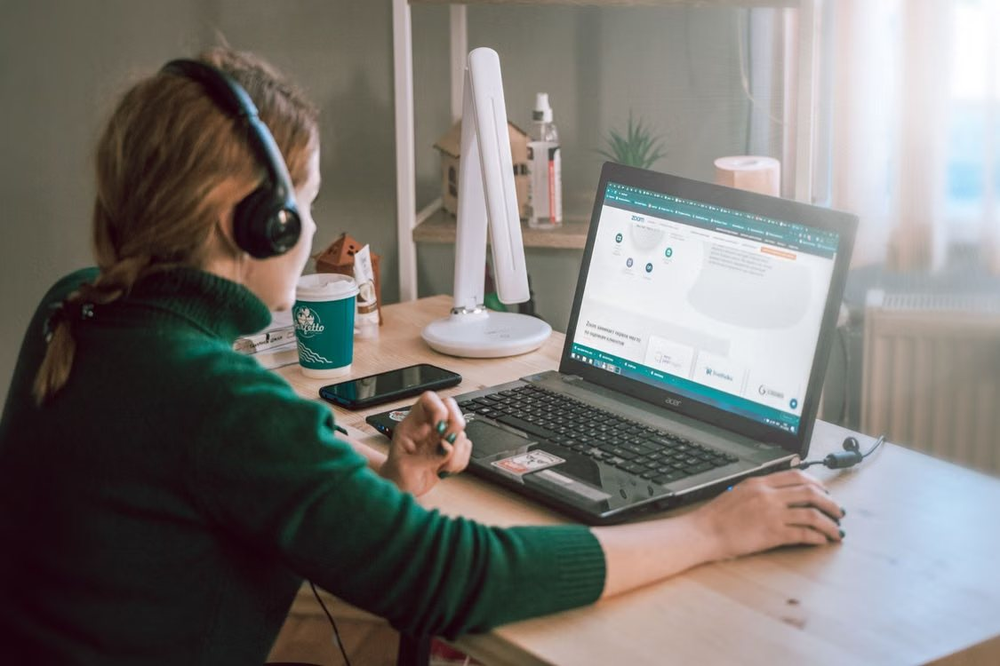
Stock photo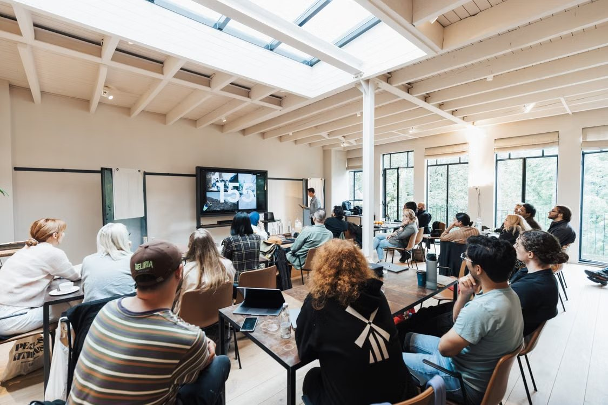
Stock photoFour units, each with an activity and an assessment
- Activity
An interactive walkthrough narrated by the AI agent - Assessment
A platform navigation task - Feedback
Automated
- Activity
Paired transcript comparison with demo videos - Assessment
Guiding a mock student through a CoTrace task - Feedback
An AI first pass, then a fuller human comment
- Activity
Co-constructing a rubric in discussion - Assessment
A holistic portfolio evaluation - Feedback
Qualitative, from a human, with no percentage mark
- Activity
A think-aloud modelling video the agent pauses to ask questions - Assessment
A task design worksheet and reflective commentary - Feedback
Human only, reflecting in writing, audio or video
Choosing the mode and the feedback to fit the task
- Unit 2 uses short videos, because tone and delivery are central to guiding
- Unit 3 colour-codes sample portfolios by depth of engagement
- In Unit 4, facilitators choose to reflect in writing, audio or video
- Procedural tasks
Automated feedback - Judgement tasks
An AI check against the rubric, then a human comment - Process evaluation
Qualitative human feedback, no raw mark - Personal reflection
Reviewed by a human only
Selected screens
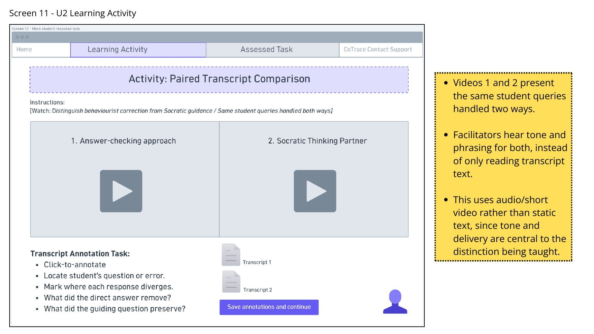
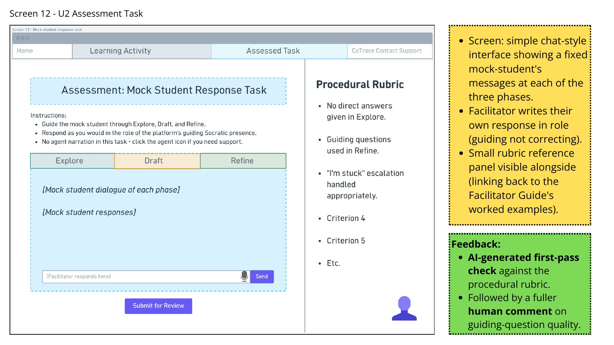
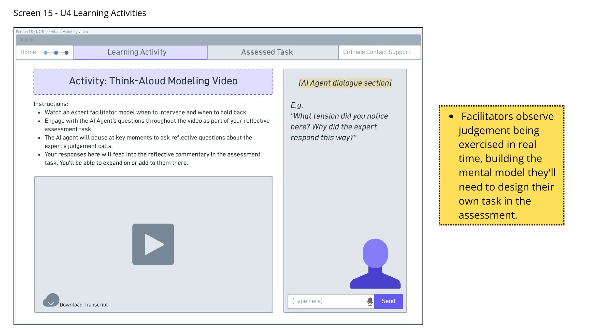
The full storyboard and wireframes are available on request. Email me at zandaley@gmail.com.
Adult literacy curriculum
→Adult literacy curriculum for rural women in Zambia
A community-based curriculum and assessment plan that helps Chichewa-speaking women manage market trading and banking on their own terms, designed around oral, communal and low-tech ways of learning.
Chichewa-speaking women at a Tikondane-inspired community centre
Six 45-minute sessions, oral and low-tech
Ubuntugogy, andragogy, translanguaging, constructive alignment
Conceptual design for my diploma, not delivered to learners
Design a low-tech, multilingual, oral and communal literacy curriculum for women in rural Zambia who were largely left out of formal education.
- Poverty, underfunding, many languages and unreliable electricity and data.
- Little digital content in local languages, and volunteer facilitators with limited digital training.
- Written tests shut out learners who know the content but can’t yet write it, especially in English.
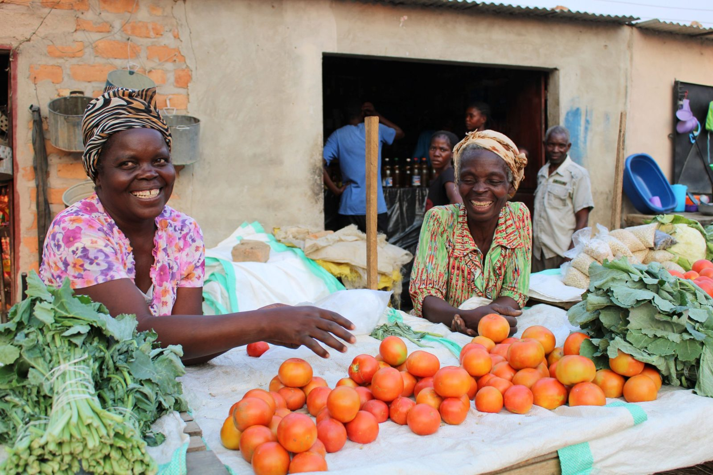
Stock photoThe constraints became the design.
- Low-tech, multilingual and oral delivery weren’t limits to work around.
- They made Ubuntu, translanguaging and community-based assessment structural, not add-ons.
Four outcomes, from recall to evaluation
Grounded in Bloom’s Digital Taxonomy (Churches, 2008), but reached through talk, performance and collaboration instead of screens.
Recall and explain key vocabulary for market trading, basic banking and financial communication in both Chichewa and English.
Use polite spoken English and translanguaging strategies to negotiate prices and communicate with peers in simulated market trading.
Apply functional literacy and numeracy to calculate costs, record transactions and interpret banking information.
Evaluate their own and their peers’ communication and record-keeping through a shared trading activity, naming strengths and areas to improve.
Six sessions that build towards a community market
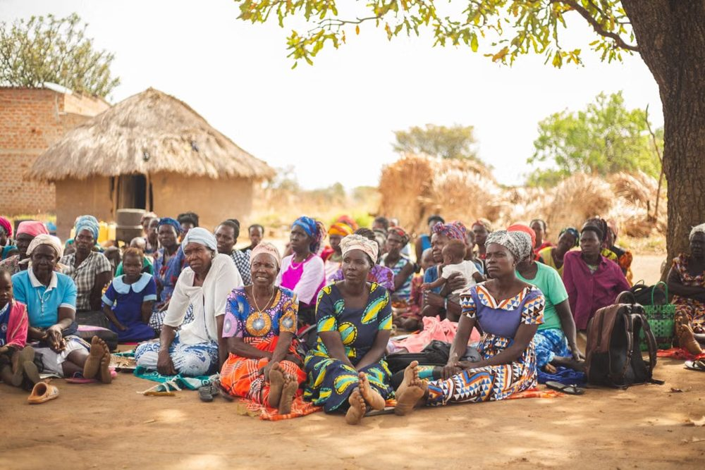
Stock photoSession 1Community entryBuilding trust and drawing on what learners already know.Read more ↻- An Ubuntu name circle builds communal trust
- Freirean picture codes draw out market vocabulary in Chichewa
- “Each one teach one” peer teaching links Chichewa to English
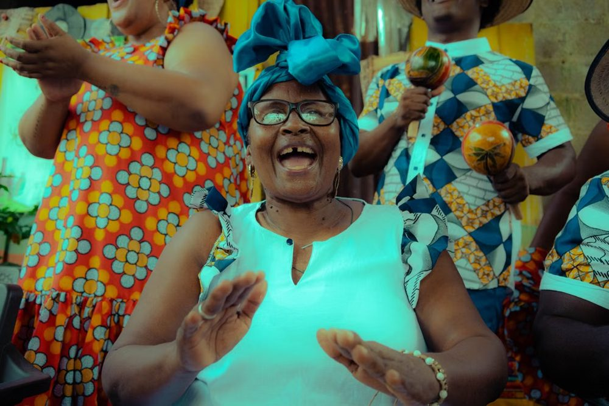
Stock photoSession 2Rhythm and oral practiceCo-created chants make new phrases stick.Read more ↻- Groups build bilingual chants, like “How much is this? / Ndalama zingati?”
- Rhythm and gesture act as memory anchors
- Groups perform for one another
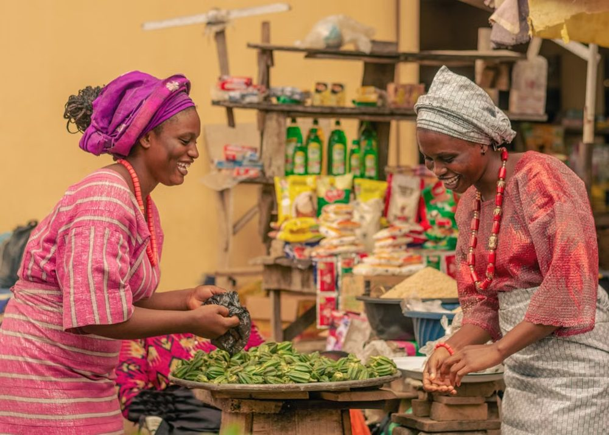
Stock photoSession 3 · AssessedMarket role-playNegotiating as buyers and sellers in two languages.Read more ↻- Visual cue cards support the role-play
- Translanguaging is encouraged
- Peers observe and give feedback
- Formative, authentic assessment
- Mock deposit slips and tally sheets
- Paper versions of banking app screens
- Practice only, not formally assessed
- Learners run stalls, trade and record transactions in both languages
- Supporting a peer counts as much as accuracy
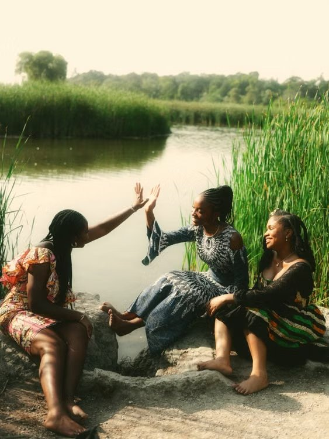
Stock photoSession 6 · ClosingUbuntu reflection circleLearners reflect together and shape what comes next.Read more ↻- Learners share what they learned and how the community helped
- They co-evaluate the programme with the facilitator
- Their input feeds the next version
Learner-centred, communal and rooted in context
- Content is co-constructed through dialogue and role-play
- The classroom becomes “just us”, not “them and us”
- Facilitators act as co-learners
- Learners identify their own learning needs
- Every theme has immediate use in daily life
- That’s when literacy feels truly valuable
- The home language bridges meaning
- English proficiency grows alongside it
- Cultural identity is preserved, not replaced
- “The best technology is the one you already have, know how to use, and can afford”
- Blackboards, picture cards, props and real objects
- Paper imitations of banking apps prepare learners for digital tasks
- A hybrid of Taba’s bottom-up model and curriculum co-creation
- Builds on indigenous knowledge
- Avoids top-down models that centre colonial academic content
- Each outcome has a clear verb, such as “apply”
- It’s activated through authentic practice, like a mock deposit
- It’s verified through real-world performance, not a written test
Oral, performative and fair to low-literacy learners
- Market trader and banking client tasks replace written tests
- Criteria are co-constructed in Chichewa and English
- Used for self- and peer-assessment
- Supporting a peer is as assessable as technical accuracy
- Facilitator observation notes reviewed after each session
- The reflection circle doubles as formative assessment
- Learners’ co-evaluation feeds the next version (Biggs and Tang’s action research spiral)
Working with AI, and what I learned
- Claude drafted the first outcomes and criteria; NotebookLM supported close work with sources
- The drafts carried broad Western assumptions, as Sridhar et al. (2023) warn
- I revised them using Bangura, Waghid, and Sichula and Genis
- Decisions about the learners, focus and technology were my own
- Designing for an oral culture challenged my assumptions about assessment
- I moved from tests that report facts to functional, performative assessment
- The limits of the context are what made the curriculum relevant
This is a conceptual design developed for my Postgraduate Diploma in Instructional Design. It has not been delivered to learners.
Next projectDaily Card, a co-designed job aid
→Daily Card, a co-designed job aid for a new admin assistant
A low-fidelity desk card that brings a new hire’s workflow and a tricky decision process into one familiar, paper-based tool, shaped with her at every step.
Project manager in a team of three
Co-design with a WhatsApp probe kit and two feedback rounds
Merrill’s First Principles, SAM, care ethics
Double-sided A4 desk card (low fidelity)
A new admin assistant had to learn her role with no onboarding, so every gap in her knowledge became a wait for a busy manager.
- No manual, training plan or formal onboarding.
- She coped with sticky notes, handwritten lists and a “brain dump” planning sheet.
- Discount rules, stock and order details meant asking a busy manager.
- Waiting slowed down her replies to clients.
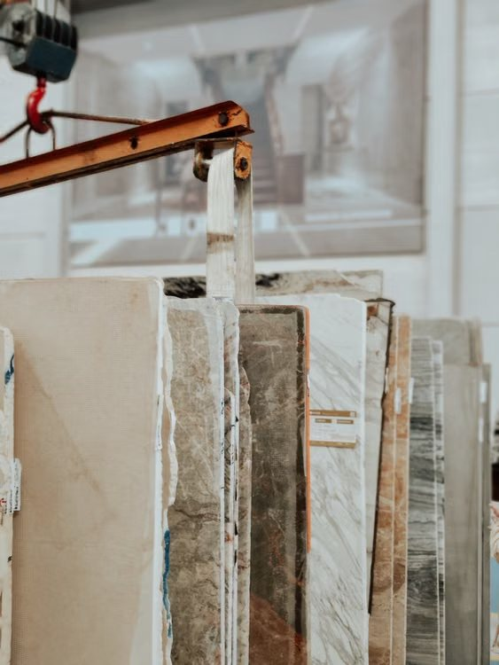
Stock photoHow we worked with her
- She had little time for formal interviews
- The kit was asynchronous, in her own space
- She shared whatever felt relevant, whenever it came up
- Round 1 asked what her workday actually looks like
- Round 2 looked back on her onboarding
- “If a magic button could instantly explain one part of your job, what would it explain?”
- Management was consulted only for content knowledge, like discount rules
- She made the design decisions
- We were open with her about who we consulted
She already had a system. It just had nothing solid behind it.
- The job aid would extend her sticky notes and brain dump sheet, not replace them.
- Everything she tracked would live in one familiar, low-stakes paper tool.
- She could rely on it without asking first.
What we designed
- Zone 1 for incoming orders
- Zone 2 for stock allocation
- Printed daily and kept on her desk
- Starts with telling structural damage from cosmetic damage
- Walks her through the decision
- Ends with a clear checklist for when to escalate
- Merrill’s First Principles shaped what the card teaches
- SAM kept iteration quick and close to her
- Blank percentage fields are filled in once with her manager, so the rules become hers
She tested Version 1 and told us what didn’t fit
We shared Version 1 in the same WhatsApp group and asked what worked, what was confusing and what she wouldn’t realistically use.
- Zone 1 columns reordered to match her workflow, with a new slab column
- Delivery date removed, since the card is printed daily
- Zone 2 rebuilt from her own sketch, including tombstone orders
- More intentional colour-coding, because the colour helped
- She said the structure worked well for her
- Severely damaged slabs joined the escalation checklist instead of becoming a new step
The project led the company to create a formal SOP for the role.
- Co-designing the card made the missing onboarding visible.
- After I raised it with management, the company created a standard operating procedure for the role.
My role, and what I learned
- Coordinated the plan, division of work and timeline
- Across the co-design sessions, prototyping and iteration
- She needed to feel allowed to act without checking first
- That changed the tone and framing of the card
- A job aid can let an organisation off the hook for onboarding it never provided
- Naming that tension with management led to the SOP